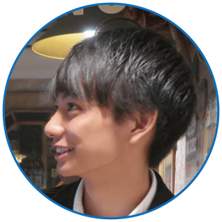
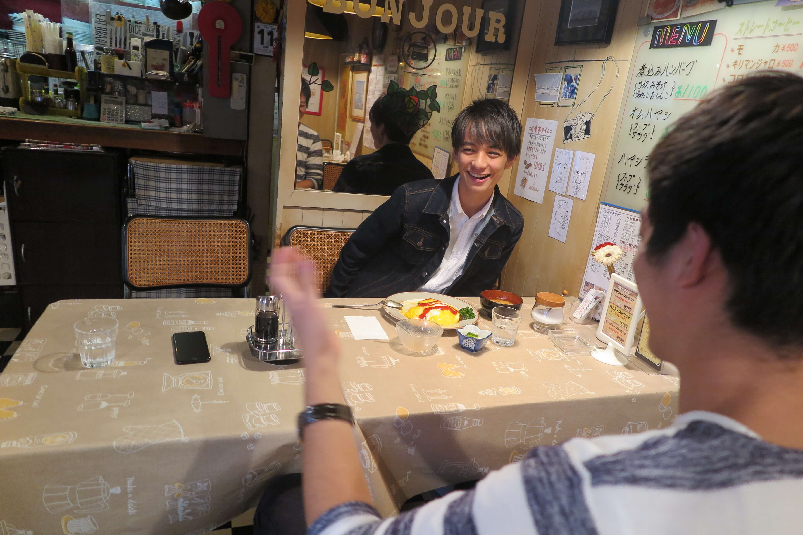

Profile
吉田 ひろき（よしだ ひろき）
工学部経営工学学科2年 1996年生まれ O型
 呼び名決めから行きましょう！普段なんて呼ばれてるんですか？
呼び名決めから行きましょう！普段なんて呼ばれてるんですか？
 大学では男からはひろき、女の子からは吉田君って呼ばれてます。
 吉田君...やっぱ高嶺の花なのかなぁ。
吉田君...やっぱ高嶺の花なのかなぁ。
普段女子と会話しないからいきなり下の名前で呼びづらいのかなぁ。
 高校の頃のあだ名が「ドビー」だったって聞いたんですけどなんでですか？
高校の頃のあだ名が「ドビー」だったって聞いたんですけどなんでですか？
結構多いですね。。
それで坊主の次の日に「ドビーに似てね？」ってクラスメイトに言われたのが始まりです。
 ひどい。
ひどい。
 「ひろくん」とかではなく？
「ひろくん」とかではなく？
 銭湯がお好きだとか？
銭湯がお好きだとか？
結構行きますね！家の近くの銭湯はよく行きますし、時間があるときは遠くまで行ったりします。
 何人ぐらいで行くんですか？
何人ぐらいで行くんですか？
1人で行くか少人数で行くかですね。4人とかだと待たせちゃうことがありますからね～。長風呂しても大丈夫な友達と行きますね。
 ちなみに銭湯上がったら何飲みますか？
ちなみに銭湯上がったら何飲みますか？
 王道！僕もですけど！
王道！僕もですけど！
銭湯サークル所属の我らが代表斎藤がここで物申す。
(代表) 邪道言ってもいいですか？
 ホントに銭湯サークルなんですか？？
ホントに銭湯サークルなんですか？？
やっぱり30円ぐらい高くてもコーヒー牛乳買っちゃいますよ！そこは！
 銭湯上がった後の「黄金ルート」みたいなのはありますか？
銭湯上がった後の「黄金ルート」みたいなのはありますか？
なんだろうなぁ...
 パンツ履きます。
パンツ履きます。
 コーヒー牛乳飲みます。
コーヒー牛乳飲みます。
飲みます...あ、たまにその後マッサージチェア座りますね。
 マッサージチェア。完全に楽しみ方わかってますね。...さて座って汗も引いてきました。
マッサージチェア。完全に楽しみ方わかってますね。...さて座って汗も引いてきました。
その後は食べるか帰るかですね。
 意外とあっさりしてたーい。
意外とあっさりしてたーい。
えー？（笑）銭湯好きな子だったらいいですけど,あんまりあれかな。

理想のデートかあ。
大人になったらちょっと高い、例えば銀座の和食屋さんとかに行きたいですね。
 おぉ和食派ですか。
おぉ和食派ですか。
洋食もいいんですけどデートだったら和食がいいです。
 ちなみに「最近ちょっと背伸びして贅沢した話」とかありますか？
ちなみに「最近ちょっと背伸びして贅沢した話」とかありますか？
そうですね、恵比寿に「白いカレーうどん」食べに行きました。
✨恵比寿✨の白いカレーうどん。
— 吉田 紘城 (@mrtus2016_02) 2016年9月30日
めっちゃ美味しかったです。
店内綺麗だし、おしゃれ。
バイト先の先輩に連れて行ってもらわないと行けなかっただろーなー。 pic.twitter.com/Bi9K7gjBjk
 聞いたことありますそれ！あれってどうなってるんですか？
聞いたことありますそれ！あれってどうなってるんですか？
普通のカレーうどんにジャガイモのムースがかかってるんですよ。
 なるほど！ほんとにカレーまで白いのかと思ってました。
なるほど！ほんとにカレーまで白いのかと思ってました。
 そういえば吉田さん食べ物系のツイート多いですよね？
そういえば吉田さん食べ物系のツイート多いですよね？
バイト先の先輩が食べ物好きなんで影響されちゃいました。池袋のとんかつ屋さんでバイトをしてるので結構池袋とか,恵比寿,飯田橋にご飯連れて行ってもらうんです。

 連れて行ってもらうタイプですか？
連れて行ってもらうタイプですか？
まずは連れて行ってもらっておいしいものがあったらそこから友達に広げていく感じですね。
 あ、いいですねそれ。そこで大人な店知ってたらかっこいいですよね。
あ、いいですねそれ。そこで大人な店知ってたらかっこいいですよね。
俺そういうのが目的で食文化研究会入ったんだよな...
 じゃあ女の子の話しますか？
じゃあ女の子の話しますか？
 ...はい。そうでした。吉田くんでした。
...はい。そうでした。吉田くんでした。
 でも聞いていきたいところではありますね。女の子の話。
でも聞いていきたいところではありますね。女の子の話。
自分の知らないお店とか結構知ってる子がいいですね。
連れて行って欲しい？
それもあるし、いろんなところ知れるじゃないですか。僕はあんまりハンバーガーとか知らないから連れて行ってもらいたいかな…。
なるほど。外見でいうと？
 芸能人でいうと？
芸能人でいうと？
波瑠さんとか。
 目がおっきくて切れ長な感じ？
目がおっきくて切れ長な感じ？
そうそう,それで片耳に髪かけてたりすると
いいですねぇ！
 そろそろ誕生日ですよね。二十歳になったらやってみたいことってありますか？
そろそろ誕生日ですよね。二十歳になったらやってみたいことってありますか？
 日本ですか？ 青春18切符とか使って？
日本ですか？ 青春18切符とか使って？
いいですね！まずは国内で。この前尾道に行ったんですよ。
 ぜひ彼女と...! ちなみ海外だと？
ぜひ彼女と...! ちなみ海外だと？
現地の料理をたくさん食べたいですね。スペイン料理とか。
 ヨーロッパですか？
ヨーロッパですか？
サッカー好きなんですよ。だからサッカーの試合見たい！
 金町でご飯は食べますか？
金町でご飯は食べますか？
この前「國分ラーメン食堂」行きました。鉄腕ダッシュで取り上げられたところ。チャーシューおいしかった〜！むしろ他はどこがおいしいですか？
(ここでボンジュールのご主人と奥さんが満面の笑みで拍手喝采)
 ミスターコン始めて変わったなと思うことありますか？
ミスターコン始めて変わったなと思うことありますか？
それこそ高校時代あんまり仲良くなかった友達が連絡くれたり,他のキャンパスの人と遊びに行ったり。
一年生の頃は短パンにTシャツ，サンダルみたいな感じで通学していて，友達にも笑われていたんですけど。
 昔から靴が好きだって伺ってたんですけど,そこからファッションにつなげていくことはなかったんですか？
昔から靴が好きだって伺ってたんですけど,そこからファッションにつなげていくことはなかったんですか？
んー、一年生だったしお金なかったからあんまりいい靴見つけても,買おう！ってならなかったんですよね。

 そんな吉田くん、いまさらなんですけど... ミスターコンはなんで出場しようと思ったんですか？
そんな吉田くん、いまさらなんですけど... ミスターコンはなんで出場しようと思ったんですか？
金町にミスターコンのスカウトが来ていたらしくて,その時にその友達が話してたみたいで．．．。
 陰謀に巻き込まれたと...後悔はないですか？
陰謀に巻き込まれたと...後悔はないですか？